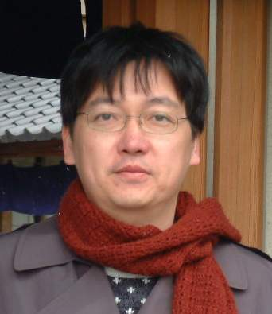

黃崇明教授

Chung-Ming Huang
received the B.S. degree in electrical engineering from National Taiwan University on 1984/6, and the M.S. and Ph.D. degrees in computer and information science from The Ohio State University on 1988/12 and 1991/6. He is a Distinguished Professor of Dept. of Computer Science and Information Engineering, National Cheng Kung University, Tainan, Taiwan, R.O.C. He was (i) Chair of Dept. of Computer Science and Information Engineering and Director of Institute of Medical Informatics, National Cheng Kung University, Taiwan, R.O.C. and (ii) Principal Project Reviewer of Industrial Development Bureau and Department of Industrial Technology, Ministry of Economic Affairs (MOEA), Taiwan, R.O.C. He has been Guest-Editors of some special issues in some international journals. He is the Steering Co-Chair of International Symposium on Pervasive Systems, Algorithms, and Network (I-SPAN); he has served as General Chairs and Program Chairs of several international conferences. He has published more than 360 referred journal and conference papers in wireless mobile communication protocols, Vehicular ad hoc Network (VANET) protocols, audio and video streaming, ubiquitous/pervasive computing and communication and formal modeling of communication protocols. His research interests include Wireless and Mobile Network Protocol Design and Analysis, Multimedia Processing and Streaming, Ubiquitous/Pervasive Computing and Communication and Innovative Network Applications and Services. He likes travelling. He has been to 63 countries. He collects key chains and T-shirts. Currently, he has 2154 key chains and 476 T-shirts that were purchased world-widely (2025/11/25).
More information about him and his lab can be found in the following URL: http://www.mmnetlab.csie.ncku.edu.tw
學術活動
- The 14th International Symposium on Pervasive Systems, Algorithms, and Networks
(I-SPAN2025) (2025/1/19~ 2025/1/23)
Steering Chair,Bangkok, Thailand
- The 6th International Conference on Internet of Vehicles
(IOV 2019) (2019/11/18~2019/11/21)
General Chair, Kaohsiung, Taiwan
- The 16th International Symposium on Pervasive Systems, Algorithms, and Networks
(I-SPAN 2019) (2019/9/16~2019/9/18)
Steering Co-Chair, Napoli, Italy.
- The 15th International Symposium on Pervasive Systems, Algorithms, and Networks
(I-SPAN 2018) (2018/10/16~2018/10/18)
Steering Co-Chair, YiChang, Hubei, China.
- The 87th IEEE Vehicular Technology Conference
(VTC2018-Spring) (2018/6/3~2018/6/6)
Program Committee, Porto, Portugal
- The 85th IEEE Vehicular Technology Conference
(VTC2017-Spring) (2017/6/4~2017/6/7)
Program Committee, Sydney, Australia
- The 86th IEEE Vehicular Technology Conference
(VTC2017-Fall) (2017/2/24~2017/9/27)
Program Committee, Toronto, Canada
- The 14th International Symposium on Pervasive Systems, Algorithms, and Networks
(I-SPAN 2017) (2017/6/21~2017/6/23)
Steering Co-Chair, Exeter, United Kingdom (UK).
- The 3rd International Conference on Internet of Vehicles
(IOV 2016）(2016/12/8~2016/12/10)
General Co-Chair, Nadi, Fiji
- The 2nd International Conference on Internet of Vehicles
(IOV 2015）(2015/12/19~2015/12/21)
Steering Co-Chair, Chengdu, Sichuan, China
- The 82nd IEEE Vehicular Technology Conference
(VTC2015-Fall) (2015/9/6~2015/9/9)
Program Committee, Boston, U.S.A.
- The 13th International Symposium on Pervasive Systems, Algorithms, and Networks
(I-SPAN 2014) (2014/12/19~2014/12/21)
Steering Co-Chair, Chengdu, Sichuan, China.
- The 18th IEEE Vehicular Technology Conference-Fall
(VTC2013-Fall) (2013/9/2~2013/9/5)
Program Committee, Las Vegas, U.S.A.
- 2013 IEEE World Cyber Matrices Congress (IEEE iThings /CPS Com/Green Com 2013)-International Workshop on Machine to Machine Communication
(IWMMC2013) (2013/8/20~2013/8/23)
General Co-chair, Beijing, China
- The 12th International Conference on Telecommunications for Intelligent Transport Systems
(ITST 2012) (2012/11/5~2012/11/8)
Tutorial Chair, Taipei, Taiwan.
- The 26th IEEE International Conference on Advanced Information Networking and Applications
(AINA2012) ( 2012/3/26~2012/3/29)
Publicity Co-Chair, Tokyo, Japan
-
The 14th International Conference on Network-based Information Systems
(NBiS 2011) (9/7/2011~9/9/2011)
International Liaison Co-Chairs, Tirana, Albania
-
The 11th International Conference on Telecommunications for Intelligent Transport Systems
(ITST 2011) (8/23/2011~8/25/2011)
International Advisory Board Committee member, St. Petersburg, Russia
-
The 25th IEEE International Conference on Advanced Information Networking and Applications
(AINA 2011) (3/22/2011~3/25/2011)
International Liaison Co-Chairs, Singapore
-
The 13th International Conference on Network-based Information Systems
(NBiS 2010) (9/15/2010~9/17/2010)
Award Co-Chair Takayama, Gifu, Japen
-
2009 International Symposium on Pervasive Systems, Algorithms and Networks
(I-SPAN 2009) (12/14/2009~12/16/2009)
General Chair, Kaohsiung, Taiwan
-
The IEEE International Conference on Communications-Vehicular Networking & Application workshop
(ICC2009-VehiMobi09) (6/14/2009~6/18/2009)
Program Chair, Dresden, German
-
The 2008 International Symposium on Parallel Architectures, Algorithms, and Network
(I-SPAN 2008) (5/7/2008/~5/9/2008)
Advisory Committee, Sydney, Australia
-
The 22nd IEEE International Conference on Advance Information Networking and Applications
(AINA 2008) (3/25/2008~2/28/2008)
International Advisory Committee, Okinawa, Japan
-
The 2007 IEEE Region 10 Conference on Intelligent Information Communication Technologies for Better Human Life
(TENCON 2007) (10/30/2007~11/2/2007)
Computer Networks Program Track Chair, Taipei, Taiwan
-
The 21st IEEE International Conference on Advance Information Networking and Applications
(AINA 2007) (5/21/2007~5/23/2007)
International Advisory Committee, Niagara Falls, Ontario, Canada
-
The 20th IEEE International Conference on Advanced Information Networking and Applications
(AINA 2006) (4/18/2006~4/20/2006)
International Advisory Committee, Vienna, Austria
-
2005 Symposium on Digital Life and Internet Technologies
(6/2/2005~6/3/2005)
Program Chair; Tainan, Taiwan
-
The 19th IEEE International Conference on Advanced Information Networking and Applications
(AINA 05) (3/28/2005~3/30/2005)
Workshop Coordination Chair, Taipei, Taiwan.
-
The 18th IEEE International Conference on Advanced Information Networking and Applications
(AINA 04) (3.29.2004~3.31.2004)
Vice Program Chair, Fukuoka, Japan.
-
The 17th IEEE International Conference on Advanced Information Networking and Applications
( AINA 03) (3/27/2003~3/29/2003)
Vice Program Chair; Xi’an, China.
-
2002 International Computer Symposium
(ICS2002) (12.18.02~12.21.02)
Program Co-Chair; Hualien, Taiwan, R.O.C.
-
2002 Microsoft Research Asia Summit
（5/1/2002）
Program Chair; Tainan, Taiwan, R.O.C.
-
The 16th International Conference on Information Networking
(ICOIN-16) (1.30.2002~2.1.2002)
Vice Program Chair; Cheju Island, Korea.
-
2001 Workshop on the 21st Century Digital Life and Internet Technologies
(5.17.2001~5.18.2001)
Program Chair; Tainan, Taiwan, R.O.C.
-
The 15th International Conference on Information Networking
(ICOIN-15) (1.31.2001~2.2.2001)
Vice Program Chair; Beppu City, Oita, Japan.
-
2000 Workshop on Internet and Distributed Systems
(WIND 2000) (5.11.2000~5.12.2000)
Tutorial Chair; Tainan, Taiwan, R.O.C.
-
5th Joint Conference on Information Science (JCIS2000)-1st International Workshop on Intelligent Multimedia Computing and Networking
(IMMCN2000) (2.27.2000~3.3.2000)
Co-Program Chair; Atlantic City, New Jersey, U.S.A.
-
2000 IEEE International Conference on Distributed Computing Systems
(ICDCS2000)
Publication Co-Chair; Taipei, Taiwan, R.O.C.
-
1999 Workshop on Computer Communication Networks
(4.24.99.~4.25.99.)
Program Chair; Tainan, Taiwan, R.O.C.
-
1998 International Computer Symposium
(ICS98) (12.17.98. ~ 12.19.98.)
Tutorial Chair; Tainan, Taiwan, R.O.C.
-
1998 International Computer Symposium (ICS98) – Workshop on Computer Networks, Internet, and Multimedia
(12.17.98. ~ 12.19.98.)
Program Chair; Tainan, Taiwan, R.O.C.
-
1998 International Conference on Parallel and Distributed Systems
(ICPADS98) (12.14.98. ~ 12.16.98.)
Publication Chair; Tainan, Taiwan, R.O.C.
-
1995 Workshop on Distributed Systems Technologies and Applications
(84/07/19 ~ 84/07/21)
Vice Program Chair; Tainan, Taiwan, R.O.C.
榮譽與獲獎
- Distinguished Professor, National Cheng Kung University, Taiwan, R.O.C., 2004/08 ~
- 2024 World’s Top 2% Scientists (「全球前2%頂尖科學家」) – Career-long Impact (「終身科學影響力排行榜」), 2024
- Best Paper Award of the 19th Conference of Information Technology and Applications in Outlying Islands (ITAOI 2021)Quemoy, Taiwan, 2021/5/28~2021/5/29
- Best Paper Award of the 15th International Symposium on Pervasive Systems, Algorithms, and Networks (I-SPAN 2018),YiChang, China, 2018/10.
- Best Paper Award of the 11th EAI International Wireless Internet Conference (WiCON 2018),Taipei, Taiwan, 2018/10.
- Best Paper Award of the 13th International Symposium on Pervasive Systems, Algorithms, and Networks (I-SPAN 2014),Chengdu, China, 2014/12.
- Best Paper Award of the 10th IEEE International Conference on Ubiquitous Intelligence and Computing (UIC 2013), Vietri sul Mare, Italy, 2013/12.
- 2011 Computex台北國際電腦展」-「台灣ITS/Telematics精彩100」: (2011 Computex-Excellent100 of Taiwan ITS/Telematics) 台灣古蹟文史脈流行動導覽服務平台(The Demodulating and Encoding Heritage (DEH) Mobile Navigation Service Platform for Exploring Taiwanese Heritage)優質技術獎和優質服務獎 2011/6
- 指導碩士班學生謝宗翰榮獲經濟部第一屆車載資通訊WAVE/DSRC創新競賽-創意組 亞軍, 2010/11/5
- Best Paper Award for 2010 Workshop on Consumer Electronics (WCE 2010)，Taipei, Taiwan, 2010/12
- Best Paper Award of the Computer Society of the R.O.C. (The Republic of China)，Taiwan, 2009/12
- Best Paper Award for 2008 International Computer Symposium (ICS2008),2008/11
- Best Paper Award for the 20th IEEE International Conference on Advanced Information Networking and Applications (AINA 2008)，2008/3
- 國立成功大學特聘教授，2004/8~迄今
- 95年Linux黃金企鵝研發創新獎(以使用者為中心的通用 IA 存取平台), 2006/8
- IPv6 Ready LOGO Phase I 銀質標章"認證(SCTP-MOVIDEO Server), 2006/3.
- 國立成功大學工學院九十一學年度研究優良教師，2003/06
- 90年度中國電機工程學會，「優秀青年電機工程師獎」，2001/12/07
- Best Paper Award for The 15th IEEE International Conference on Information Networking (ICOIN-15), 2001/1.
- 指導博士班學生龔旭陽榮獲89年度龍騰論文獎入選，2000/10
- 獲87學年度教育部大學校院「通訊科技教育改進計畫」教材編寫佳作， 2000/02
- 指導博士班學生張明裕榮獲88年度龍騰論文獎入選，1999/10
- 獲87學年度教育部大專院校「通訊科技專題製作競賽」大學組佳作，1999/05
- 獲86學年度教育部大專院校「通訊科技專題製作競賽」大學組優等，1998/06
- 指導碩士班學生林志浩榮獲85年「龍騰論文獎」佳作，1996/11/30
- 獲83學年度教育部「校園軟體創作獎勵」科學與工程類特優，1995/05
- 指導碩士班學生許政穆榮獲 82年全國「青年論文獎」第二名，1993/10
- 指導碩士班學生賴輝陽榮獲 82年「全錄論文獎」第三名，1993/10
- IEEE Columbus Section Outstanding Academic Achievement, 1991.
學經歷
經歷
- 國立成功大學特聘教授，2004/8~迄今
- 國立成功大學資訊工程系教授，1996/8~迄今
- 國立成功大學資訊工程系副教授，1991/8~1996/7
- 美國俄亥俄州立大學電腦科學系助教，1986/08 - 1991/06
- 國立成功大學資訊工程系系主任，2006/8~2009/7
- 國立成功大學醫學資訊工研究所所長，2007/2~2008/7
- 經濟部工業局「公司研發支出適用投資抵減作業」委員會 審查委員，101/4~114/12
- 經濟部工業局「科技事業申請上市或上櫃市場意見書評估審議會」審議委員，108/1~110/12, 111/1~113/12, 114/1~116/12
- 經濟部技術處「A+企業創新研發淬鍊計畫」審查委員，107/9~
- 經濟部工業局「提供係屬科技事業或文化創意產業具市場性意見書」專案評估委員，108/1/1~113/12/31
- 經濟部中小企業處「小型企業創新研發(SBIR) 計畫」審查委員，110/1~110/12
- 經濟部技術處「法人科技專案計畫」審查委員，~110/12
- 經濟部技術處「學界科技專案計畫」審查委員，~110/12
- 中華工程教育學會-工程教育認證團 主席/委員，95~105
- Chapter Chair, IEEE Vehicular Technology Society,Tainan Section, Taiwan. 2014/1~2015/12
- 教育部「網路通訊人才培育先導型計畫」-「網通應用服務平台技術」教學推動聯盟中心：召集人，2011/4~2014/3
- 教育部「網路通訊科技人才培育先導型計畫」-「車載資通訊」教學推動聯盟中心：召集人，2010/4~2011/3
- 教育部「資通訊科技人才培育先導型計畫」-「車載資通訊」教學推動聯盟中心：召集人，2007/9~2010/3
- 經濟部工業局「主導性新產品開發計畫」、經濟部技術處「業界開發產業技術計畫」技術審查委員會: 主審委員, 2003/3~2005/2, 2007/1~2009/12
- 經濟部「促進產業研究發展借貸計畫」技術審查委員會:主審委員，2005/1-2007/12
- 教育部「通訊科技教育改進計畫」-「網路應用與服務」教學推動中心：召集人，2003/1~2007/3
- IPv6 Forum Taiwan，「網路應用與服務」研發小組:召集人 ，2002/1-2004/12
- 中華民國ISO/OSI多媒體文件交換標準工作組:主席，1994/09 - 1995/08
- 中華民國影像學會:秘書長，1993/01 - 1994/12
- 中華民國OSI/ISO多媒體文件交換標準工作組:副主席，1992/09 - 1994/06
學歷
- 美國俄亥俄州立大學電腦科學系博士，1991/6
- 美國俄亥俄州立大學電腦科學系碩士，1988/12
- 國立台灣大學電機工程系學士，1984/6